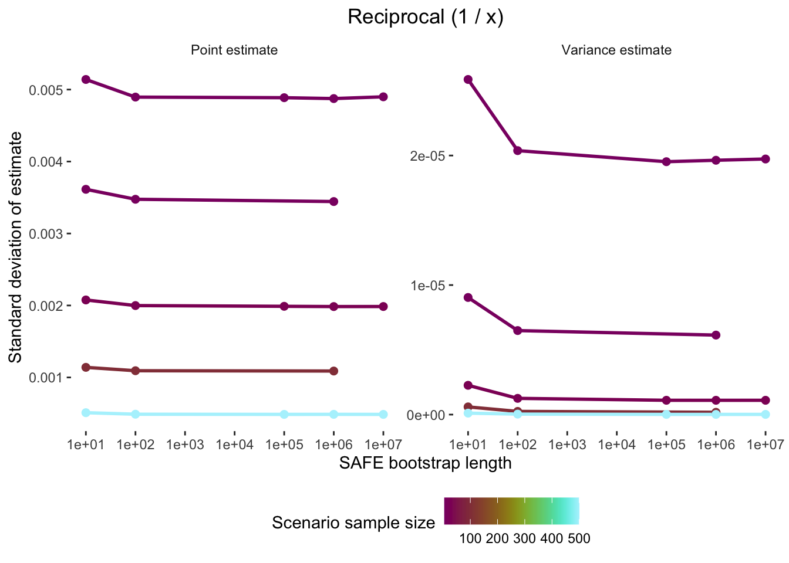

# First, clean the environment:
rm(list = ls())
# Now load packages:
# install.packages("groundhog")
library("groundhog")
groundhog.library(pkg = c("data.table", "MASS", "crayon",
"tmvtnorm", "here",
"parallel", "foreach", "doSNOW",
"ggplot2", "patchwork", "scico"),
date = "2025-04-15")SAFE
step by step online tutorial
Introduction
If you have any questions, errors or bug reports, please feel free to contact Erick Lundgren (erick.lundgren@gmail.com).
The simulations take a long time to run on a personal computer. We have therefore uploaded all simulation results as .Rds files, though we show exactly how we ran the simulations.
To run the code interactively (instead of just reading this lovely tutorial), do the following:
- Clone the github repo: https://github.com/ejlundgren/SAFE.git
- Run the code chunks in the SAFE simulations tutorial.qmd while in the R project session or just follow along here on the web :)
Load libraries
The groundhog package ensures that the library versions you use are the same as ours. You will need R version 4.5.0. Be sure to install groundhog if it is not already installed with install.packages().
An introduction to SAFE bootstrapping
SAFE bootstrapping is an incredible, seemingly magical, technique to calculate variance estimates for effect sizes, for which sampling variance formulas may not be known. In some cases, it is also more unbiased than traditional plugin formulas for variance and point estimates (i.e., the effect size itself).
How does it work?
With SAFE bootstrapping, one draws a cloud of hyperparameters of all variables used in an effect size formula. You then apply your effect size formula to this cloud. The variance of this transformed cloud, is the sampling variance of your effect size!
You can then calculate a bias-transformed point estimate by taking the mean of this transformed cloud and subtracting 2 times the point estimate derived simply from the original variables.
Let’s demonstrate.
Imagine you want to create an effect size of ‘speed’ from mean latency time (e.g., time until an event happens). Here let’s start with 3 mean latency times and convert to our new ‘speed’ effect size
mean_latency <- c(15, 30, 21)
n <- c(25, 31, 50)
sd <- c(4.6, 3.1, 2.5)
# New effect size:
1/mean_latency[1] 0.06666667 0.03333333 0.04761905The effect size is trivial to calculate. But what is the sampling variance of this effect size, given that each of these measurements was associated with measurement sample size and standard deviation?
You could use calculus to derive a first-order sampling variance formula. Or you could use SAFE.
Step 1: draw hyperparameters.
If the word ‘hyperparameter’ is scary, what we mean is a distribution of the variables associated with the definition formula of the effect size, in this case latency. Let’s draw 10,000 samples of this hyperparameter from a normal distribution. To avoid using lapply or loops, let’s just use SAFE to calculate variance for the first mean latency time. We’ll calculate standard error from the associated standard deviation and sample size to capture the dispersion of this hyperparameter.
Shinichi, I don’t fully understand why we square root the N for this effect size but not the others

Step 2: transform hyperparameters to target effect size
Now, let’s transform this cloud of hyperparameters to ‘speed’ with our definition formula 1/x
cloud_trans <- 1/cloud
hist(cloud_trans)
These values are similar to our transformed effect size:
x <- 15
plugin_effect_size <- 1/x
plugin_effect_size[1] 0.06666667Step 3: Calculate sampling variance
To calculate sampling variance for our effect size we calculate standard error of this transformed cloud. This can be confusing: you do this with sd, the standard deviation function because this is a hyperparameter (not a population). Squaring this produces sampling variance:
safe_SE <- sd(cloud_trans)
safe_vi <- safe_SE^2
safe_vi[1] 1.723067e-05Voila! Sampling variance for a novel effect size.
Step 4: Calculate bias-corrected effect size
However, given low sample sizes for some measurements, and the knowledge that point estimates can be biased at low N, let’s also calculate a bias-corrected point estimate from this cloud of hyperparameters:
safe_yi <- (2 * plugin_effect_size) - mean(cloud_trans)
safe_yi[1] 0.06641769Let’s compare this to the original point estimate:
safe_yi[1] 0.06641769plugin_effect_size[1] 0.06666667So similar! And potentially less biased. We’ll find out below, where we use Monte Carlo simulations to compare the bias of estimates from SAFE to estimates from plugging into a formula.
Load encapsulated functions
We wrote a function to calculate effect sizes both with plugin estimators and with SAFE. This function can be sourced into the local environment. Let’s load the function and then calculate effect sizes, with SAFE, for several examples from the main text. The function is located in the github repo at tutorial/SAFE_function.R. This function returns a data.table (basically a fast data.frame) with columns for plugin effect sizes and sampling variances (denoted with _first or _second based on derivative order) and SAFE effect sizes and sampling variances (denoted with _safe). Point estimates (effect sizes) are denoted with yi_ while sampling variances are denoted with vi_.
#' *COMMENT OUT FOR RENDERING AND DELETE PRIOR TO PUBLICATION:*
# setwd("tutorial")
source("SAFE_function.R")
# For a single effect size and sampling variance:
eff_size(x1 = 14.5, x2 = 7.9,
sd1 = 1.3, sd2 = 2,
n1 = 20, n2 = 20,
effect_type = "lnRoM",
SAFE = TRUE,
verbose = TRUE,
SAFE_boots = 1e6)lnRoM cannot accept x1 or x2 ≤ 0. Leaving it to user's discretion to check prior to execution. Negative values will be returned as NA.
Using the formulas:
yi_first <- log(x1 / x2)
yi_second <- log(x1 / x2) + 0.5 * (sd1^2/(n1 * x1^2) - sd2^2/(n2 * x2^2))
vi_first <- sd1^2 / (n1 * x1^2) + sd2^2 / (n2 * x2^2)
vi_second <- sd1^2 / (n1 * x1^2) + sd2^2 / (n2 * x2^2) + 0.5 * ( (sd1^4 / (n1^2 * x1^4)) + (sd2^4 / (n2^2 * x2^4)))
Be sure that all variables in formula are correctly named.
SAFE: 1 / 1
Running SAFE with 1e+06 bootstraps yi_first yi_second vi_first vi_second yi_safe vi_safe SE_safe
<num> <num> <num> <num> <num> <num> <num>
1: 0.6072859 0.6058845 0.003606517 0.003611733 0.605911 0.003625 0.06020797Or with a vector of raw data:
UPDATE TO BE PARALLELIZED VERSION
eff_size(x1 = c(14.5, 13, 15.8),
x2 = c(7.9, 21, 18.4),
sd1 = c(1.3, 2, 1.9),
sd2 = c(2, 3.1, 1.4),
n1 = c(20, 20, 20),
n2 = c(20, 15, 18),
effect_type = "SMD",
SAFE = TRUE,
verbose = FALSE,
SAFE_boots = 1e6) yi_first yi_second vi_first vi_second yi_safe vi_safe SE_safe
<num> <num> <num> <num> <num> <num> <num>
1: 3.912937 3.835196 0.3014615 0.2975274 3.820715 0.3654276 0.6045060
2: -3.167230 -3.094698 0.2686568 0.2633745 -3.408408 0.2533951 0.5033837
3: -1.545312 -1.512893 0.1387221 0.1343396 -1.540899 0.1403610 0.3746478For a full list of options that eff_size can calculate, please see information by running:
eff_size()
Must specify an effect size type ('effect_type') and necessary variables (named in arguments to function call) to match formula equations.
Returning effect size names & required variables for reference. name vars_required
<char> <char>
1: SMD x1, x2, sd1, sd2, n1, n2
2: SMD_paired x1, x2, sd1, sd2, r, n1, n2
3: lnCVR x1, x2, sd1, sd2, n1, n2
4: lnCVR_paired x1, x2, sd1, sd2, r, n1, n2
5: lnHWE_A n_AA, n_Aa, n_aa
6: lnM x1, x2, sd1, sd2, n1, n2
7: lnM_paired x1, x2, sd1, sd2, n1, n2, r
8: lnOR a, b, c, d
9: lnRR a, c, n1, n2
10: lnRoM x1, x2, sd1, sd2, n1, n2
11: lnRoM_paired x1, x2, sd1, sd2, r, n1, n2
12: reciprocal n, x, sdHow good is SAFE?
We simulated the bias of SAFE calculations versus normal plugin calculations for a variety of common, and less common, effect sizes. We did this across a range of input variables, particularly sample size and the number of SAFE bootstraps. The creation of these scenarios differed for each effect size (based on input variables). The scenarios can be loaded as follows. Let’s look at the simulations for lnRoM:
scenarios <- readRDS("data/scenarios.Rds")
# Subset scenarios:
guide <- scenarios[effect_type == "lnRoM" &
boots == 1e6, ]
guide[, .(effect_type, scenario_id, boots,
true_mean1, true_mean2,
true_sd1, true_sd2,
sample_size1, sample_size2)] effect_type scenario_id boots true_mean1 true_mean2 true_sd1 true_sd2
<char> <char> <num> <num> <num> <num> <num>
1: lnRoM lnRoM_scenario_4 1e+06 13.4 16.1 4.6 3.9
2: lnRoM lnRoM_scenario_10 1e+06 13.4 16.1 4.6 3.9
3: lnRoM lnRoM_scenario_16 1e+06 13.4 16.1 4.6 3.9
4: lnRoM lnRoM_scenario_22 1e+06 13.4 16.1 4.6 3.9
5: lnRoM lnRoM_scenario_28 1e+06 13.4 16.1 4.6 3.9
sample_size1 sample_size2
<num> <num>
1: 5 5
2: 10 10
3: 50 50
4: 100 100
5: 150 150To evaluate effect size performance, we conducted Monte Carlo simulations for each scenario. In these simulations, we created simulated datasets based on true values for each scenario. We then calculated effect sizes and sampling variances (both with plugin formulas and SAFE) for the ‘true’ values and based on the simulated dataset. We did this 1e5 times for each scenario.
In these Monte Carlo simulation, we were interested in bias, or the difference between the ‘true’ estimands (i.e., sampling variance and effect sizes) and the estimates (of sampling variance and effect sizes) produced from various methods and applied to the simulated data. We’ll explain the difference between estimands, estimators, and estimates below.
To illustrate, we’ll do a dummy simulation for lnRoM. Note that the means/sd for each scenario are the same. The only variables that differ are sample sizes. To make this tractable, we’ll only run 100 simulations.
To speed things up we will do this in parallel. The function prepare_cluster() below can help set things up and provides a progress bar so you don’t lose your mind wondering what’s going on in there.
set.seed(2025)
# Prepare cluster:
prepare_cluster <- function(n,
progress_bar = TRUE){
require("parallel")
require("foreach")
require("doSNOW")
nCores <- parallel::detectCores() -1
cl <- makeCluster(nCores)
registerDoSNOW(cl)
# Progress bar
if(progress_bar == TRUE){
pb <- txtProgressBar(max = n, style = 3)
progress <- function(n) setTxtProgressBar(pb, n)
opts <- list(progress = progress)
ret <- list(opts, pb, cl)
names(ret) <- c("options", "progress", "cluster")
}else{
ret <- list(cl)
names(ret) <- c("cluster")
}
return(ret)
cat("Pass 'x$options' to .opts in foreach;
'x$progress' to setTxtProgressBar(x$progress, i);
'x$cluster' to stopCluster(x$cluster) after foreach")
}Now we will run 100 simulations to showcase how this method works. The actual simulations had a length of 1e5 and are loaded and visualized in Section XXXX. The first part of this code (inside the lapply) creates simulated data based on ‘true’ means and standard deviations. This data is then summarized to a simulation mean and standard deviation. We will then calculate effect sizes and sampling variances for the ‘true’ values and simulated values. Note that even with only 100 iterations, this can take a minute, so feel free to load the already run dummy dataset in the next code block.
rerun <- F
if(rerun){
monte_carlo_N <- 100
clust_out <- prepare_cluster(n = monte_carlo_N)
res <- foreach(i = 1:monte_carlo_N,
.options.snow = clust_out$options,
.errorhandling = "pass",
.packages = c("data.table", "MASS", "tmvtnorm")) %dopar% {
# Calculate 'true' values from scenario:
true_point <- eff_size(x1 = guide$true_mean1, x2 = guide$true_mean2,
sd1 = guide$true_sd1, sd2 = guide$true_sd2,
n1 = guide$sample_size1, n2 = guide$sample_size2,
effect_type = "lnRoM",
SAFE = FALSE,
verbose = FALSE,
SAFE_boots = 1e6)
setnames(true_point,
c("yi_first", "vi_first",
"yi_second", "vi_second"),
c("true_y_plugin_1st", "true_v_plugin_1st",
"true_y_plugin_2nd", "true_v_plugin_2nd"))
# Simulate data for each scenario in an lapply:
sim_dat <- lapply(1:nrow(guide), function(x){
# Simulate data for guide
sig <- diag(c(guide$true_sd1[x]^2,
guide$true_sd2[x]^2))
means <- c(m1 = guide$true_mean1[x],
m2 = guide$true_mean2[x])
y <- rtmvnorm(n = max(c(guide$sample_size1[x], guide$sample_size2[x])),
mean = means,
sigma = sig,
lower = rep(0, length(means)),
upper = rep(Inf, length(means)),
algorithm = "gibbs") |>
as.data.frame() |>
setDT()
names(y) <- c("m1", "m2")
# Filter to number of samples per treatment
sim_dat <- list(x1 = y[1:guide$sample_size1[x], ]$m1,
x2 = y[1:guide$sample_size2[x], ]$m2)
sim_dat <- data.table(sim_mean1 = mean(sim_dat$x1),
sim_mean2 = mean(sim_dat$x2),
sim_sd1 = sd(sim_dat$x1),
sim_sd2 = sd(sim_dat$x2),
sim_sample_size1 = length(sim_dat$x1),
sim_sample_size2 = length(sim_dat$x2))
return(sim_dat)
}) |> rbindlist()
out <- eff_size(x1 = sim_dat$sim_mean1, x2 = sim_dat$sim_mean2,
sd1 = sim_dat$sim_sd1, sd2 = sim_dat$sim_sd2,
n1 = guide$sample_size1, n2 = guide$sample_size2,
effect_type = "lnRoM",
SAFE = TRUE,
verbose = FALSE,
SAFE_boots = 1e6)
setnames(out,
c("yi_first", "vi_first",
"yi_second", "vi_second"),
c("sim_y_plugin_1st", "sim_v_plugin_1st",
"sim_y_plugin_2nd", "sim_v_plugin_2nd"))
# Store results:
results <- data.table(guide,
sim_dat,
true_point,
out)
setTxtProgressBar(clust_out$progress, i)
return(results)
}
stopCluster(clust_out$cluster)
res <- rbindlist(res)
head(res)
}Or just load the full simulation (1e5) here:
scenario_id boots effect_type true_mean1 true_mean2 true_sd1 true_sd2
<char> <num> <char> <num> <num> <num> <num>
1: lnRoM_scenario_4 1e+06 lnRoM 13.4 16.1 4.6 3.9
2: lnRoM_scenario_4 1e+06 lnRoM 13.4 16.1 4.6 3.9
3: lnRoM_scenario_4 1e+06 lnRoM 13.4 16.1 4.6 3.9
sample_size1 sample_size_ratio sample_size2 sim_mean1 sim_mean2 sim_sd1
<num> <num> <num> <num> <num> <num>
1: 5 1 5 13.12934 16.59769 4.986235
2: 5 1 5 12.73781 14.25180 4.363871
3: 5 1 5 14.81564 14.87446 1.991222
sim_sd2 sim_sample_size1 sim_sample_size2 true_y_plugin_1st
<num> <int> <int> <num>
1: 4.004230 5 5 -0.1835646
2: 3.704075 5 5 -0.1835646
3: 3.157322 5 5 -0.1835646
true_y_plugin_2nd true_v_plugin_1st true_v_plugin_2nd sim_y_plugin_1st
<num> <num> <num> <num>
1: -0.177648 0.03530438 0.03565099 -0.234413837
2: -0.177648 0.03530438 0.03565099 -0.112308908
3: -0.177648 0.03530438 0.03565099 -0.003962011
sim_y_plugin_2nd sim_v_plugin_1st sim_v_plugin_2nd yi_safe vi_safe
<num> <num> <num> <num> <num>
1: -0.225810970 0.04048679 0.04097060 -0.225408279 0.04328101
2: -0.107326891 0.03698369 0.03735046 -0.106866241 0.03915580
3: -0.006661305 0.01262393 0.01267106 -0.006623332 0.01285204
SE_safe iter
<num> <int>
1: 0.2080409 1
2: 0.1978783 2
3: 0.1133668 3Calculate bias
To interpret the simulation results, it is essential to understand the difference between estimands, estimators, and estimates.
Estimands are the ‘true’ value.
Estimators are the methods used to estimate the estimand. What a tongue twister! In our case, the estimators are the 1st order effect size (e.g., definition formula), the 2nd order effect size that has been adjusted (usually using the delta method, except for Hedges’ g) to reduce bias, and the SAFE method.
Estimates are the estimates of the estimands produced by the estimators.
Effect size (point estimate) bias
In the case of our effect sizes, there are two estimands that we’re interested in estimating: the ‘true’ effect size (based on the definition formula of the effect size type) and sampling variance. To calculate the bias of our various estimators in estimating effect sizes, we calculate the mean of the estimates from each simulated dataset and subtract the estimand value (the true effect size off the ‘true’ values).
Here we will calculate bias in our estimates of effect sizes:
bias <- function(estimates, estimand){
return(mean(estimates) - unique(estimand))
}
point.bias <- res[, .(plugin_1st = bias(sim_y_plugin_1st, true_y_plugin_1st),
plugin_2nd = bias(sim_y_plugin_2nd, true_y_plugin_1st),
safe = bias(yi_safe, true_y_plugin_1st)),
by = .(scenario_id, sample_size1, sample_size2)] |> unique()
head(point.bias) scenario_id sample_size1 sample_size2 plugin_1st plugin_2nd
<char> <num> <num> <num> <num>
1: lnRoM_scenario_4 5 5 -0.003738263 0.002470844
2: lnRoM_scenario_10 10 10 -0.000385537 0.002574180
3: lnRoM_scenario_16 50 50 0.001587492 0.002159629
4: lnRoM_scenario_22 100 100 0.001640940 0.001925938
5: lnRoM_scenario_28 150 150 0.001657941 0.001847710
safe
<num>
1: 0.003160768
2: 0.002682675
3: 0.002163063
4: 0.001926593
5: 0.001848109# Melt this to make it plottable:
point.bias.long <- melt(point.bias,
id.vars = c("scenario_id", "sample_size1", "sample_size2"),
value.name = "bias",
variable.name = "estimator")
head(point.bias.long) scenario_id sample_size1 sample_size2 estimator bias
<char> <num> <num> <fctr> <num>
1: lnRoM_scenario_4 5 5 plugin_1st -0.003738263
2: lnRoM_scenario_10 10 10 plugin_1st -0.000385537
3: lnRoM_scenario_16 50 50 plugin_1st 0.001587492
4: lnRoM_scenario_22 100 100 plugin_1st 0.001640940
5: lnRoM_scenario_28 150 150 plugin_1st 0.001657941
6: lnRoM_scenario_4 5 5 plugin_2nd 0.002470844# Sort by sample size
setorder(point.bias.long, sample_size1)
ggplot(data = point.bias.long[sample_size1 == sample_size2, ],
aes(x = sample_size1, y = bias, color = estimator))+
geom_hline(yintercept = 0)+
geom_path(linewidth = 1)+
xlab("Sample size")+
ylab("Bias")+
coord_cartesian(ylim = c(-0.01, 0.01))+
scale_color_manual("Estimator",
labels = c("plugin_1st_bias" = "1st order plugin (definition formula)",
"plugin_2nd_bias" = "2nd order plugin (bias-corrected formula)",
"safe_bias" = "SAFE bootstrapping"),
values = c("plugin_1st" = "#A8DADC",
"plugin_2nd" = "#1D3557",
"safe" = "#E63946"))+
theme_bw()+
theme(panel.border = element_blank(),
panel.grid = element_blank(),
legend.position = "bottom")
This indicates that the least biased estimator is the first order definition formula (light blue). SAFE (red) and the 2nd order plugin (navy blue) perform similarly. These bias values are incredibly small, indicating that all options are fair, except for at low sample sizes, when the first-order definition formula is quite biased.
Sampling variance bias
Interestingly, there is no way to know the ‘true’ estimand for sampling variance. WHICH I DON’T FULLY UNDERSTAND. To calculate bias for our sampling variance estimates, we actually calculate the variance in point estimates for each estimator and use each of these as the estimand. With 3 estimators, and thus 3 estimands, we’ll thus end up with 9 calculations of bias.
Since we’re interested in relative bias (Not entirely sure why), we’ll calculate bias as above but divide by the estimand and multiply by 100.
# First, calculate variance in point estimates as our 'estimand'
res[, var_estimand_1st := var(sim_y_plugin_1st),
by = .(scenario_id)]
res[, var_estimand_2nd := var(sim_y_plugin_2nd),
by = .(scenario_id)]
res[, var_estimand_SAFE := var(yi_safe),
by = .(scenario_id)]
# To make this easier to read, we'll encapsulate the relative bias in a function:
relative_bias <- function(estimates,
estimand){
return(((mean(estimates) - unique(estimand)) / estimand) * 100)
}
# Now summarize and calculate relative bias per scenario ID
var.bias <- res[, .(SAFE_estimate.1st_estimand = relative_bias(vi_safe, var_estimand_1st),
SAFE_estimate.2nd_estimand = relative_bias(vi_safe, var_estimand_2nd),
SAFE_estimate.SAFE_estimand = relative_bias(vi_safe, var_estimand_SAFE),
plugin_1st_estimate.1st_estimand = relative_bias(sim_v_plugin_1st, var_estimand_1st),
plugin_1st_estimate.2nd_estimand = relative_bias(sim_v_plugin_1st, var_estimand_2nd),
plugin_1st_estimate.SAFE_estimand = relative_bias(sim_v_plugin_1st, var_estimand_SAFE),
plugin_2nd_estimate.1st_estimand = relative_bias(sim_v_plugin_2nd, var_estimand_1st),
plugin_2nd_estimate.2nd_estimand = relative_bias(sim_v_plugin_2nd, var_estimand_2nd),
plugin_2nd_estimate.SAFE_estimand = relative_bias(sim_v_plugin_2nd, var_estimand_SAFE)),
by = .(scenario_id, sample_size1, sample_size2)] |> unique()
# Now melt:
var.bias.long <- melt(var.bias,
id.vars = c("scenario_id", "sample_size1", "sample_size2"))
head(var.bias.long) scenario_id sample_size1 sample_size2 variable
<char> <num> <num> <fctr>
1: lnRoM_scenario_4 5 5 SAFE_estimate.1st_estimand
2: lnRoM_scenario_10 10 10 SAFE_estimate.1st_estimand
3: lnRoM_scenario_16 50 50 SAFE_estimate.1st_estimand
4: lnRoM_scenario_22 100 100 SAFE_estimate.1st_estimand
5: lnRoM_scenario_28 150 150 SAFE_estimate.1st_estimand
6: lnRoM_scenario_4 5 5 SAFE_estimate.2nd_estimand
value
<num>
1: 12.2824838
2: 3.5304146
3: 0.1791294
4: 0.5912706
5: 0.3287710
6: 16.6524224# Split the 'variable' into estimator and estimand for plotting
var.bias.long[, c("Estimator", "Estimand") := tstrsplit(variable, ".", fixed = TRUE)]
# Sort the dataset by sample size
setorder(var.bias.long, sample_size1)
# Plot
ggplot(data = var.bias.long[sample_size1 == sample_size2, ],
aes(x = sample_size1, y = value, color = Estimator))+
geom_path(linewidth = 1)+
geom_hline(yintercept = 0)+
xlab("Sample size")+
ylab("Relative bias (%)")+
scale_color_manual("Estimator",
labels = c("plugin_1st_estimate" = "1st order plugin (definition formula)",
"plugin_2nd_estimate" = "2nd order plugin (bias-corrected formula)",
"SAFE_estimate" = "SAFE bootstrapping"),
values = c("plugin_1st_estimate" = "#A8DADC",
"plugin_2nd_estimate" = "#1D3557",
"SAFE_estimate" = "#E63946"))+
facet_wrap(~Estimand,
ncol = 1,
labeller = as_labeller(c("1st_estimand" = "1st order plugin estimand\n(definition formula)",
"2nd_estimand" = "2nd order plugin estimand",
"SAFE_estimand" = "SAFE estimand")))+
theme_bw()+
theme(panel.border = element_blank(),
panel.grid = element_blank(),
strip.background = element_blank(),
legend.position = "bottom")
We see here that SAFE (red) is slightly more biased, but in a conservative direction, than the other estimators.
Plot all simulations results
Now let’s look at the rest of the simulation results.
sim_results <- readRDS("data/all_scenarios_summarized.Rds")
sim_results <- sim_results[boots == 1e6, ]Speed
This was our dummy effect size in the beginning. How do the point and variance estimates calculated by SAFE compare to just calculating 1 / x for point estimates?
Moreover, we compared the variance estimates from SAFE to variance estimates produced by a 1st-order derivative sampling variance formula derived with the delta method (denoted 1st order plugin here). Let’s see which did better!

SMD 4-multivariate normal
The SAFE estimator for this effect size was calculated with a multivariate normal distribution for both mean and SD.

SMD 2-multivariate normal and 2-Wishart
With this estimator, the SAFE calculation used the normal distribution for the two means but the Wishart distribution to estimate the SD.
lnCVR 4-multivariate normal
The SAFE estimator for this effect size was calculated with a multivariate normal distribution for both mean and SD.

lnCVR 2-multivariate normal and 2-Wishart
The SAFE estimator for this effect size was calculated with a multivariate normal distribution for both mean and SD.
lnOR
In this effect size estimation, the SAFE calculation used a binomial distribution to draw random binomial samples for ‘a’ and ‘c’.
lnRR
In this effect size estimation, the SAFE calculation drew ‘a’ and ‘c’ from a binomial distribution.
Hardy Weinberg Disequilibrium
In this effect size estimation, the SAFE calculation drew ‘n_AA’, ‘n_Aa’, and ‘n_aa’ from a binomial distribution.
How many SAFE bootstraps?
The SAFE method relies on bootstrapping to calculate effect size point estimates and sampling variance. It’s sort of magical how well it works! But, how many bootstraps are necessary? Let’s find out by doing another Monte Carlo simulation, again of lnRoM. This time, instead of calculating bias, we’ll look at the standard deviation of the point and sampling variance estimates as we change the number of bootstraps.
Let’s two bootstrap lengths: 100 and 1,000. We’ll run the Monte Carlo simulation itself 1,000 times just to make this easy. (See below for full 1e5 simulation results)
# Create some scenarios based on combinations of sample size and boot-length
scenario <- CJ(effect_type = "lnRoM",
true_mean1 = 13.4, true_sd1 = 4.6,
true_mean2 = 16.1, true_sd2 = 3.9,
sample_size1 = c(5, 10, 150),
boots = c(100, 1000))
scenario[, sample_size2 := sample_size1]
scenarioKey: <effect_type, true_mean1, true_sd1, true_mean2, true_sd2, sample_size1, boots>
effect_type true_mean1 true_sd1 true_mean2 true_sd2 sample_size1 boots
<char> <num> <num> <num> <num> <num> <num>
1: lnRoM 13.4 4.6 16.1 3.9 5 100
2: lnRoM 13.4 4.6 16.1 3.9 5 1000
3: lnRoM 13.4 4.6 16.1 3.9 10 100
4: lnRoM 13.4 4.6 16.1 3.9 10 1000
5: lnRoM 13.4 4.6 16.1 3.9 150 100
6: lnRoM 13.4 4.6 16.1 3.9 150 1000
sample_size2
<num>
1: 5
2: 5
3: 10
4: 10
5: 150
6: 150Now let’s run this in a foreach loop. If you’d rather not run this on your machine, this will load the finished result below if run == FALSE.
run <- FALSE
if(run == TRUE){
out <- list()
sub_scenario <- c()
N <- 1000
clust_out <- prepare_cluster(n = N,
progress_bar = FALSE)
res <- list()
res <- foreach(i = 1:N,
.options.snow = clust_out$options,
.errorhandling = "stop",
.packages = c("data.table", "MASS",
"crayon", "tmvtnorm")) %dopar% {
sub_scenario <- scenario[boots == 100, ]
out[[1]] <- eff_size(x1 = sub_scenario$true_mean1,
x2 = sub_scenario$true_mean2,
sd1 = sub_scenario$true_sd1,
sd2 = sub_scenario$true_sd2,
n1 = sub_scenario$sample_size1,
n2 = sub_scenario$sample_size2,
effect_type = "SMD",
SAFE = TRUE,
verbose = FALSE,
SAFE_boots = unique(sub_scenario$boots))
out[[1]] <- data.table(out[[1]],
sub_scenario[, .(boots, sample_size1)])
out[[1]]
sub_scenario <- scenario[boots == 1000, ]
out[[2]] <- eff_size(x1 = sub_scenario$true_mean1,
x2 = sub_scenario$true_mean2,
sd1 = sub_scenario$true_sd1,
sd2 = sub_scenario$true_sd2,
n1 = sub_scenario$sample_size1,
n2 = sub_scenario$sample_size2,
effect_type = "SMD",
SAFE = TRUE,
verbose = FALSE,
SAFE_boots = unique(sub_scenario$boots))
out[[2]] <- data.table(out[[2]],
sub_scenario[, .(boots, sample_size1)])
out[[2]]
return(rbindlist(out))
}
res.dt <- rbindlist(res)
res.dt
saveRDS(res.dt, "data/dummy_bootstrap_simulation.Rds")
}else{
res.dt <- readRDS("data/dummy_bootstrap_simulation.Rds")
}Let’s look at the dispersion of the SAFE estimates as a function of sample size and bootstrap length
# First, the point estimates:
ggplot(data = res.dt,
aes(x = as.factor(sample_size1), y = yi_safe,
fill = boots,
group = interaction(sample_size1, boots)))+
geom_jitter(alpha = .5, shape = 21,
position = position_jitterdodge(dodge.width = 1))+
geom_violin(position = position_dodge(width = 1))+
ylab("SAFE Point Estimate")+
xlab("Scenario sample size")+
scale_fill_scico("Number of SAFE bootstraps",
palette = "hawaii")+
theme_bw()+
theme(panel.border = element_blank(),
panel.grid = element_blank(),
strip.background = element_blank(),
legend.position = "bottom")
Now let’s look at the variance estimates:
ggplot(data = res.dt,
aes(x = as.factor(sample_size1), y = vi_safe,
fill = boots,
group = interaction(sample_size1, boots)))+
geom_jitter(alpha = .5, shape = 21,
position = position_jitterdodge(dodge.width = 1))+
geom_violin(position = position_dodge(width = 1))+
ylab("SAFE Variance Estimate")+
xlab("Scenario sample size")+
scale_fill_scico("Number of SAFE bootstraps",
palette = "hawaii")+
theme_bw()+
theme(panel.border = element_blank(),
panel.grid = element_blank(),
strip.background = element_blank(),
legend.position = "bottom")Looks like the dispersion in estimates is shaped by number of SAFE bootstraps and improves considerably with 1,000 bootstraps, especially at low sample sizes. Another way to visualize this (which we’ll use below in the actual 1e5 simulations) is to plot the standard deviation.
res.summary <- res.dt[, .(sd_point_estimate = sd(yi_safe),
sd_variance_estimate = sd(vi_safe)),
by = .(sample_size1, boots)]
res.summary sample_size1 boots sd_point_estimate sd_variance_estimate
<num> <num> <num> <num>
1: 5 100 0.078522330 0.1174573606
2: 10 100 0.047790090 0.0391410785
3: 150 100 0.011788125 0.0020039743
4: 5 1000 0.024059606 0.0349769486
5: 10 1000 0.015988862 0.0121667549
6: 150 1000 0.003783855 0.0006159835# Let's melt this to make a single plot:
res.summary.mlt <- melt(res.summary,
id.vars = c("sample_size1", "boots"))
res.summary.mlt sample_size1 boots variable value
<num> <num> <fctr> <num>
1: 5 100 sd_point_estimate 0.0785223300
2: 10 100 sd_point_estimate 0.0477900903
3: 150 100 sd_point_estimate 0.0117881247
4: 5 1000 sd_point_estimate 0.0240596056
5: 10 1000 sd_point_estimate 0.0159888624
6: 150 1000 sd_point_estimate 0.0037838546
7: 5 100 sd_variance_estimate 0.1174573606
8: 10 100 sd_variance_estimate 0.0391410785
9: 150 100 sd_variance_estimate 0.0020039743
10: 5 1000 sd_variance_estimate 0.0349769486
11: 10 1000 sd_variance_estimate 0.0121667549
12: 150 1000 sd_variance_estimate 0.0006159835setorder(res.summary.mlt, boots)
ggplot(data = res.summary.mlt,
aes(x = boots, y = value, color = sample_size1,
group = interaction(sample_size1)))+
geom_path()+
geom_point(size = pt_size)+
facet_wrap(~variable,
labeller = as_labeller(c("sd_point_estimate" = "Point estimate",
"sd_variance_estimate" = "Variance estimate")))+
scale_color_scico("Scenario sample size",
palette = "hawaii")+
xlab("SAFE bootstrap length")+
ylab("Standard deviation of estimate")+
theme_bw()+
theme(panel.border = element_blank(),
panel.grid = element_blank(),
strip.background = element_blank(),
legend.position = "bottom")Bootstrap scenario results
Now let’s look at the full Monte Carlo simulation results for the influence of bootstrap length.
sim_results <- readRDS("data/all_scenarios_summarized.Rds")
sim_results <- sim_results[calculation == "SD", ]
head(sim_results) scenario_id true_mean true_sd sample_size boots effect_type
<char> <num> <num> <num> <num> <char>
1: SMD_Wishart_scenario_10_1e1 NA NA NA 10 SMD_Wishart
2: SMD_Wishart_scenario_10_1e1 NA NA NA 10 SMD_Wishart
3: SMD_Wishart_scenario_10_1e2 NA NA NA 100 SMD_Wishart
4: SMD_Wishart_scenario_10_1e2 NA NA NA 100 SMD_Wishart
5: SMD_Wishart_scenario_14 NA NA NA 10000 SMD_Wishart
6: SMD_Wishart_scenario_14 NA NA NA 10000 SMD_Wishart
true_mean1 true_mean2 true_sd1 true_sd2 sample_size1 sample_size_ratio
<num> <num> <num> <num> <num> <num>
1: 13.4 16.1 4.6 3.9 10 1
2: 13.4 16.1 4.6 3.9 10 1
3: 13.4 16.1 4.6 3.9 10 1
4: 13.4 16.1 4.6 3.9 10 1
5: 13.4 16.1 4.6 3.9 50 1
6: 13.4 16.1 4.6 3.9 50 1
sample_size2 true_p_a true_p_c n1 n_ratio n2 true_a true_c true_b
<num> <num> <num> <num> <num> <num> <num> <num> <num>
1: 10 NA NA NA NA NA NA NA NA
2: 10 NA NA NA NA NA NA NA NA
3: 10 NA NA NA NA NA NA NA NA
4: 10 NA NA NA NA NA NA NA NA
5: 50 NA NA NA NA NA NA NA NA
6: 50 NA NA NA NA NA NA NA NA
true_d p_AA p_Aa p_aa n true_n_AA true_n_Aa true_n_aa value
<num> <num> <num> <num> <num> <num> <num> <num> <num>
1: NA NA NA NA NA NA NA NA 0.492694243
2: NA NA NA NA NA NA NA NA 0.140427345
3: NA NA NA NA NA NA NA NA 0.468915976
4: NA NA NA NA NA NA NA NA 0.052888152
5: NA NA NA NA NA NA NA NA 0.206112903
6: NA NA NA NA NA NA NA NA 0.001654534
estimator estimand calculation estimate_of
<char> <char> <char> <char>
1: safe NA SD point
2: safe NA SD variance
3: safe NA SD point
4: safe NA SD variance
5: safe NA SD point
6: safe NA SD varianceReciprocal
1 / x

SMD 4-multivariate normal
The SAFE estimator for this effect size was calculated with a multivariate normal distribution for both mean and SD.
scenario_id true_mean true_sd sample_size boots effect_type
<char> <num> <num> <num> <num> <char>
1: SMD_normal_scenario_10_1e1 NA NA NA 1e+01 SMD_normal
2: SMD_normal_scenario_10_1e1 NA NA NA 1e+01 SMD_normal
3: SMD_normal_scenario_16_1e1 NA NA NA 1e+01 SMD_normal
4: SMD_normal_scenario_16_1e1 NA NA NA 1e+01 SMD_normal
5: SMD_normal_scenario_22_1e1 NA NA NA 1e+01 SMD_normal
6: SMD_normal_scenario_22_1e1 NA NA NA 1e+01 SMD_normal
7: SMD_normal_scenario_28_1e1 NA NA NA 1e+01 SMD_normal
8: SMD_normal_scenario_28_1e1 NA NA NA 1e+01 SMD_normal
9: SMD_normal_scenario_4_1e1 NA NA NA 1e+01 SMD_normal
10: SMD_normal_scenario_4_1e1 NA NA NA 1e+01 SMD_normal
11: SMD_normal_scenario_10_1e2 NA NA NA 1e+02 SMD_normal
12: SMD_normal_scenario_10_1e2 NA NA NA 1e+02 SMD_normal
13: SMD_normal_scenario_16_1e2 NA NA NA 1e+02 SMD_normal
14: SMD_normal_scenario_16_1e2 NA NA NA 1e+02 SMD_normal
15: SMD_normal_scenario_22_1e2 NA NA NA 1e+02 SMD_normal
16: SMD_normal_scenario_22_1e2 NA NA NA 1e+02 SMD_normal
17: SMD_normal_scenario_28_1e2 NA NA NA 1e+02 SMD_normal
18: SMD_normal_scenario_28_1e2 NA NA NA 1e+02 SMD_normal
19: SMD_normal_scenario_4_1e2 NA NA NA 1e+02 SMD_normal
20: SMD_normal_scenario_4_1e2 NA NA NA 1e+02 SMD_normal
21: SMD_normal_scenario_15 NA NA NA 1e+05 SMD_normal
22: SMD_normal_scenario_15 NA NA NA 1e+05 SMD_normal
23: SMD_normal_scenario_27 NA NA NA 1e+05 SMD_normal
24: SMD_normal_scenario_27 NA NA NA 1e+05 SMD_normal
25: SMD_normal_scenario_3 NA NA NA 1e+05 SMD_normal
26: SMD_normal_scenario_3 NA NA NA 1e+05 SMD_normal
27: SMD_normal_scenario_10 NA NA NA 1e+06 SMD_normal
28: SMD_normal_scenario_10 NA NA NA 1e+06 SMD_normal
29: SMD_normal_scenario_16 NA NA NA 1e+06 SMD_normal
30: SMD_normal_scenario_16 NA NA NA 1e+06 SMD_normal
31: SMD_normal_scenario_22 NA NA NA 1e+06 SMD_normal
32: SMD_normal_scenario_22 NA NA NA 1e+06 SMD_normal
33: SMD_normal_scenario_28 NA NA NA 1e+06 SMD_normal
34: SMD_normal_scenario_28 NA NA NA 1e+06 SMD_normal
35: SMD_normal_scenario_4 NA NA NA 1e+06 SMD_normal
36: SMD_normal_scenario_4 NA NA NA 1e+06 SMD_normal
scenario_id true_mean true_sd sample_size boots effect_type
true_mean1 true_mean2 true_sd1 true_sd2 sample_size1 sample_size_ratio
<num> <num> <num> <num> <num> <num>
1: 13.4 16.1 4.6 3.9 10 1
2: 13.4 16.1 4.6 3.9 10 1
3: 13.4 16.1 4.6 3.9 50 1
4: 13.4 16.1 4.6 3.9 50 1
5: 13.4 16.1 4.6 3.9 100 1
6: 13.4 16.1 4.6 3.9 100 1
7: 13.4 16.1 4.6 3.9 150 1
8: 13.4 16.1 4.6 3.9 150 1
9: 13.4 16.1 4.6 3.9 5 1
10: 13.4 16.1 4.6 3.9 5 1
11: 13.4 16.1 4.6 3.9 10 1
12: 13.4 16.1 4.6 3.9 10 1
13: 13.4 16.1 4.6 3.9 50 1
14: 13.4 16.1 4.6 3.9 50 1
15: 13.4 16.1 4.6 3.9 100 1
16: 13.4 16.1 4.6 3.9 100 1
17: 13.4 16.1 4.6 3.9 150 1
18: 13.4 16.1 4.6 3.9 150 1
19: 13.4 16.1 4.6 3.9 5 1
20: 13.4 16.1 4.6 3.9 5 1
21: 13.4 16.1 4.6 3.9 50 1
22: 13.4 16.1 4.6 3.9 50 1
23: 13.4 16.1 4.6 3.9 150 1
24: 13.4 16.1 4.6 3.9 150 1
25: 13.4 16.1 4.6 3.9 5 1
26: 13.4 16.1 4.6 3.9 5 1
27: 13.4 16.1 4.6 3.9 10 1
28: 13.4 16.1 4.6 3.9 10 1
29: 13.4 16.1 4.6 3.9 50 1
30: 13.4 16.1 4.6 3.9 50 1
31: 13.4 16.1 4.6 3.9 100 1
32: 13.4 16.1 4.6 3.9 100 1
33: 13.4 16.1 4.6 3.9 150 1
34: 13.4 16.1 4.6 3.9 150 1
35: 13.4 16.1 4.6 3.9 5 1
36: 13.4 16.1 4.6 3.9 5 1
true_mean1 true_mean2 true_sd1 true_sd2 sample_size1 sample_size_ratio
sample_size2 true_p_a true_p_c n1 n_ratio n2 true_a true_c true_b
<num> <num> <num> <num> <num> <num> <num> <num> <num>
1: 10 NA NA NA NA NA NA NA NA
2: 10 NA NA NA NA NA NA NA NA
3: 50 NA NA NA NA NA NA NA NA
4: 50 NA NA NA NA NA NA NA NA
5: 100 NA NA NA NA NA NA NA NA
6: 100 NA NA NA NA NA NA NA NA
7: 150 NA NA NA NA NA NA NA NA
8: 150 NA NA NA NA NA NA NA NA
9: 5 NA NA NA NA NA NA NA NA
10: 5 NA NA NA NA NA NA NA NA
11: 10 NA NA NA NA NA NA NA NA
12: 10 NA NA NA NA NA NA NA NA
13: 50 NA NA NA NA NA NA NA NA
14: 50 NA NA NA NA NA NA NA NA
15: 100 NA NA NA NA NA NA NA NA
16: 100 NA NA NA NA NA NA NA NA
17: 150 NA NA NA NA NA NA NA NA
18: 150 NA NA NA NA NA NA NA NA
19: 5 NA NA NA NA NA NA NA NA
20: 5 NA NA NA NA NA NA NA NA
21: 50 NA NA NA NA NA NA NA NA
22: 50 NA NA NA NA NA NA NA NA
23: 150 NA NA NA NA NA NA NA NA
24: 150 NA NA NA NA NA NA NA NA
25: 5 NA NA NA NA NA NA NA NA
26: 5 NA NA NA NA NA NA NA NA
27: 10 NA NA NA NA NA NA NA NA
28: 10 NA NA NA NA NA NA NA NA
29: 50 NA NA NA NA NA NA NA NA
30: 50 NA NA NA NA NA NA NA NA
31: 100 NA NA NA NA NA NA NA NA
32: 100 NA NA NA NA NA NA NA NA
33: 150 NA NA NA NA NA NA NA NA
34: 150 NA NA NA NA NA NA NA NA
35: 5 NA NA NA NA NA NA NA NA
36: 5 NA NA NA NA NA NA NA NA
sample_size2 true_p_a true_p_c n1 n_ratio n2 true_a true_c true_b
true_d p_AA p_Aa p_aa n true_n_AA true_n_Aa true_n_aa value
<num> <num> <num> <num> <num> <num> <num> <num> <num>
1: NA NA NA NA NA NA NA NA 0.4977615026
2: NA NA NA NA NA NA NA NA 0.2145877161
3: NA NA NA NA NA NA NA NA 0.2165617273
4: NA NA NA NA NA NA NA NA 0.0211108344
5: NA NA NA NA NA NA NA NA 0.1529327990
6: NA NA NA NA NA NA NA NA 0.0102218119
7: NA NA NA NA NA NA NA NA 0.1246954929
8: NA NA NA NA NA NA NA NA 0.0067395090
9: NA NA NA NA NA NA NA NA 0.7746612804
10: NA NA NA NA NA NA NA NA 1.2801863188
11: NA NA NA NA NA NA NA NA 0.4735927112
12: NA NA NA NA NA NA NA NA 0.0801127097
13: NA NA NA NA NA NA NA NA 0.2066875984
14: NA NA NA NA NA NA NA NA 0.0066002261
15: NA NA NA NA NA NA NA NA 0.1458986233
16: NA NA NA NA NA NA NA NA 0.0031239117
17: NA NA NA NA NA NA NA NA 0.1193598430
18: NA NA NA NA NA NA NA NA 0.0020517964
19: NA NA NA NA NA NA NA NA 0.7366167096
20: NA NA NA NA NA NA NA NA 2.3868664331
21: NA NA NA NA NA NA NA NA 0.2060319522
22: NA NA NA NA NA NA NA NA 0.0016731784
23: NA NA NA NA NA NA NA NA 0.1187903536
24: NA NA NA NA NA NA NA NA 0.0002819999
25: NA NA NA NA NA NA NA NA 0.7350439120
26: NA NA NA NA NA NA NA NA 0.2459518810
27: NA NA NA NA NA NA NA NA 0.4681304850
28: NA NA NA NA NA NA NA NA 0.0443233430
29: NA NA NA NA NA NA NA NA 0.2055419453
30: NA NA NA NA NA NA NA NA 0.0016497141
31: NA NA NA NA NA NA NA NA 0.1454850541
32: NA NA NA NA NA NA NA NA 0.0005229205
33: NA NA NA NA NA NA NA NA 0.1185157995
34: NA NA NA NA NA NA NA NA 0.0002752958
35: NA NA NA NA NA NA NA NA 0.7326821610
36: NA NA NA NA NA NA NA NA 0.2393500176
true_d p_AA p_Aa p_aa n true_n_AA true_n_Aa true_n_aa value
estimator estimand calculation estimate_of
<char> <char> <char> <char>
1: safe NA SD point
2: safe NA SD variance
3: safe NA SD point
4: safe NA SD variance
5: safe NA SD point
6: safe NA SD variance
7: safe NA SD point
8: safe NA SD variance
9: safe NA SD point
10: safe NA SD variance
11: safe NA SD point
12: safe NA SD variance
13: safe NA SD point
14: safe NA SD variance
15: safe NA SD point
16: safe NA SD variance
17: safe NA SD point
18: safe NA SD variance
19: safe NA SD point
20: safe NA SD variance
21: safe NA SD point
22: safe NA SD variance
23: safe NA SD point
24: safe NA SD variance
25: safe NA SD point
26: safe NA SD variance
27: safe NA SD point
28: safe NA SD variance
29: safe NA SD point
30: safe NA SD variance
31: safe NA SD point
32: safe NA SD variance
33: safe NA SD point
34: safe NA SD variance
35: safe NA SD point
36: safe NA SD variance
estimator estimand calculation estimate_ofSMD 2-multivariate normal and 2-Wishart
With this estimator, the SAFE calculation used the normal distribution for the two means but the Wishart distribution to estimate the SD.
lnCVR 4-multivariate normal
The SAFE estimator for this effect size was calculated with a multivariate normal distribution for both mean and SD.
lnCVR 2-multivariate normal and 2-Wishart
The SAFE estimator for this effect size was calculated with a multivariate normal distribution for both mean and SD.
lnOR
In this effect size estimation, the SAFE calculation used a binomial distribution to draw random binomial samples for ‘a’ and ‘c’.
lnRR
In this effect size estimation, the SAFE calculation drew ‘a’ and ‘c’ from a binomial distribution.
Hardy Weinberg Disequilibrium
In this effect size estimation, the SAFE calculation drew ‘n_AA’, ‘n_Aa’, and ‘n_aa’ from a binomial distribution.